Supabase / PostgREST
rede localHTTP
- Quem chama
- o app Next.js, só no servidor, com
SUPABASE_URL+SUPABASE_SERVICE_ROLE_KEY - O que traz
- as 32 tabelas e 10 views, só SELECT (127.0.0.1:55321)
- Onde guarda
- — (lê o banco)
- Fonte
web/src/lib/db.ts
O quadro de comando do estúdio: um site que roda no próprio Mac e mostra, numa olhada, quem é quem na equipe de agentes de IA, em que fase está cada vídeo, se os portões de aprovação deixaram o trabalho passar, o que vai ser publicado e quando, como os vídeos estão indo no Instagram e no Facebook, e quanto a IA consome em tokens e dólares.
Ele não cria, não edita e não publica nada. Os arquivos do projeto são a fonte da verdade; o painel só lê. Onde antes havia um botão que “criava” algo, a tela mostra o comando para copiar e colar no Claude Code.
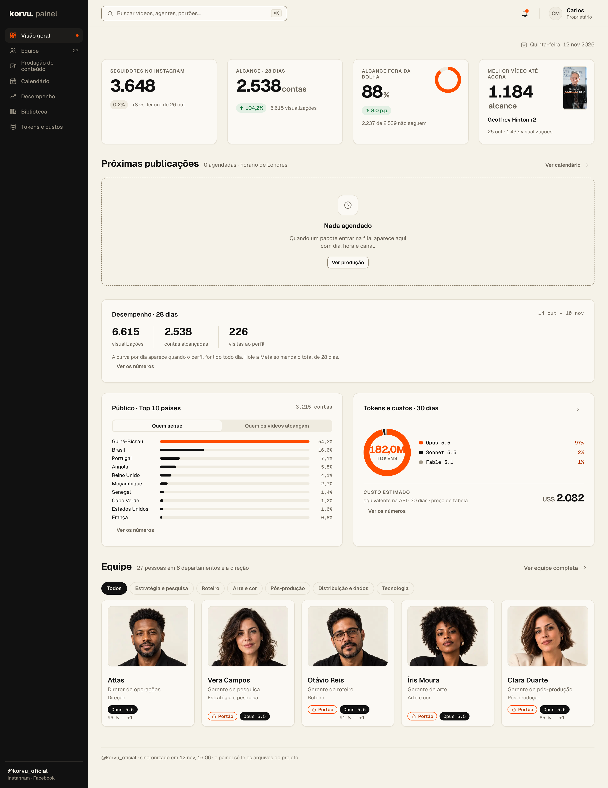
Como um dado chega à tela
Arquivos do projeto → sincronizador → Postgres → Next.js → navegador. Tudo em 127.0.0.1, sem nada aberto para a rede. O sincronizador roda a cada 15 minutos; o app só lê o banco.
o veredicto de um portão até a tela
Um agente-portão audita um vídeo e o scripts/portoes.py grava o veredicto no portoes.json do alvo (ex.: videos/<slug>/portoes.json).
A cada 15 min o launchd uk.korvu.painel roda uv run python painel/sync/sincronizar.py (StartInterval 900, RunAtLoad).
O sincronizador importa o próprio portoes.py com portoes.SO_LEITURA = True e sys.dont_write_bytecode = True; portoes_e_veredictos() devolve as linhas.
Numa transação só: truncate das tabelas-espelho e insert em portoes_estado (alvo × portão) e veredictos (chave alvo, ordem).
No Next.js, db.portoesEstado() e db.veredictos() leem pela API do Supabase, página a página de 1.000 linhas, conferindo a contagem exata.
A tela Produção (“Portões” e “Precisam de atenção”), a ficha do agente e o sino de avisos mostram o resultado.
O rodapé de toda página diz a hora da última passagem (sincronizacoes.em).
A pilha
Versões lidas do package.json, do pyproject.toml e do config.toml. Na coluna “por quê” só entra o motivo que está escrito no projeto; sem motivo escrito, fica o traço.
| Camada | Tecnologia | Versão | Por quê |
|---|---|---|---|
| Framework web | Next.js (App Router) | 15.5.28 | — |
| UI | React / React DOM | 19.1.10 | — |
| Linguagem (web) | TypeScript (strict) | 5.9.3 | — |
| Estilo | Tailwind CSS (+ @tailwindcss/postcss) | 4.3.3 | — |
| CSS do design system | CSS próprio “korvu. painel” (tokens, componentes, acréscimos, movimento) | — | cópia sem mudar de painel/design/ |
| Cliente do banco | @supabase/supabase-js | 2.58.0 | lê do lado do servidor com a chave de serviço |
| Trava de servidor | server-only | 0.0.1 | impede importar o acesso ao banco em componente de cliente |
| Lint | ESLint + eslint-config-next | 9.39.5 / 15.5.28 | — |
| Banco | Supabase local (CLI), Postgres | Postgres 17 | banco próprio, isolado do outro projeto do Mac (portas 553xx) |
| Sincronizador | Python | ≥ 3.12 | — |
| Driver Postgres | psycopg (binary) | ≥ 3.2 | — |
| YAML | PyYAML | ≥ 6.0.3 | ler equipe.yaml, cambio.yaml, biblioteca.yaml |
| Gerenciador Python | uv | — | “rodar sempre com uv run” |
| Agendador | launchd (macOS) | — | sincronização a cada 15 min |
| Docker | Colima | — | o encaminhador dele define o endereço publicado; daí a rede só-no-Mac |
| Prévias dos looks | ffmpeg | — | aplica as LUTs num quadro de amostra |
| Capturas de tela | Chrome sem janela via CDP + Node | Node ≥ 22 | olhar a tela de verdade a 1440 e 375 px |
| Fontes | Geist e Geist Mono (variáveis, OFL 1.1) | — | locais, nada do Google |
Supabase local próprio · Postgres 17
32 tabelas e 10 views criadas por 18 migrações em painel/supabase/migrations/. A maioria é espelho dos arquivos e é refeita a cada passagem; execucoes e uso_execucao são arquivo e nunca são truncadas. O custo não fica guardado nas linhas: as views calculam a partir de precos_modelo.
de painel/supabase/config.toml, project_id = "korvu-studio-painel"
ninguém de fora lê, e o app não escreve
postgres e service_role). Fora do alcance, escrito na própria migração: os default privileges do papel supabase_admin. Abrir o SVGApp em 127.0.0.1:3456; banco e API só em 127.0.0.1 por uma rede Docker com host_binding_ipv4=127.0.0.1. O iniciar.sh e o studio.sh param com erro se uma porta ficar aberta para a rede; /pg/* responde 503 com o Studio desligado.
SUPABASE_URL e SUPABASE_SERVICE_ROLE_KEY ficam em painel/web/.env.local, fora do git. O lib/db.ts tem import "server-only"; os comandos das telas de erro moram em lib/comandos.ts para nenhum componente de cliente importar o acesso ao banco.
GET /capa/[pasta]/[slug]: pasta numa lista fixa (Object.hasOwn) e slug por regex. GET /look/[id]: caminho vindo do banco e preso a painel/previas/looks/.
Não há login no app e ele não usa a chave anon. Dos registros do Claude Code, só entram números, ids, modelo, horário, slug e a descrição curta do .meta.json.
18 migrações em 4 dias, pela data do nome do arquivo
painel/sync/sincronizar.py
Um script Python lê o projeto e regrava o espelho do banco numa transação. Ele nunca escreve nos arquivos do estúdio. Se algo dá errado, nada é gravado e o painel continua com a passagem anterior.
uk.korvu.painel a cada 900 s e ao entrar na sessão do Mac; o launchd anota uma linha por passagem em _controle/logs/painel.log. Manual: --seco lê sem gravar; --ate e --regra-do-script servem só para reconciliar e são recusados no banco real sem --seco. Arraste o diagrama para o lado para ver tudo. Abrir o SVGler_projeto()
| Origem (só leitura) | Vira |
|---|---|
.claude/agents/*.md (frontmatter) + painel/equipe.yaml | departamentos, agentes (skills e comandos achados no texto) |
videos/*/portoes.json e demais alvos, via scripts/portoes.py (só leitura) | portoes_estado, veredictos |
_controle/tracker.md, videos/<slug>/status.json, roteiro.json, brutos/principal/ (só listagem e stat()), ARQUIVADO.json | videos |
05-render-pronto/<slug>/pacote.json | prontos, videos.pronto |
06-publicar/<slug>/ (pacote + post) + portoes.conferir_pacote(...) | fila |
07-publicados/<slug>/post.json e metricas.json | publicacoes, metricas |
_controle/perfil/*.json e _controle/perfil/diario/*.json (proposta) | perfil_snapshots, perfil_demografia, perfil_diario |
_controle/calendario.md (1.º bloco yaml) | calendario_vagas |
_controle/nao-publicar.json (proposta) | nao_publicar |
videos/*/material/**, videos/*/brutos/extras/**, 00-marca/referencias, painel/referencias | biblioteca_* |
00-marca/cor/luts/*, 00-marca/cor/cor.md, painel/biblioteca.yaml, remotion/src/brand.ts | looks, capa_estilos(+_exemplos), legenda_estilos, fontes, sistema_ferramentas, modelos_descricao |
videos/*/animacoes/Exx/brief.md | animacoes |
.claude/agents, .claude/skills, .claude/commands | sistema_contagens |
painel/cambio.yaml | cambio |
PRECOS no próprio código | precos_modelo |
registros do Claude Code ~/.claude/projects/<projeto>/**/*.jsonl + agent-<id>.meta.json | execucoes, uso_execucao |
Todas as páginas são Server Components com dynamic = "force-dynamic". A leitura usa todos(): pagina por 1.000 linhas, confere count: "exact", relê uma vez se a tabela mudar no meio (sincronização rodando) e lança erro se vier menos linha do que o banco diz ter. O cache() do React faz cada leitura ir ao banco uma vez por pedido.
uv run python painel/sync/previas_looks.py gera um JPEG 640×800 por look a partir de um quadro de amostra + a LUT de entrada + a LUT do look, com nome por hash, e só refaz o que mudou. É o único passo que grava arquivo (em painel/previas/looks/).
/videos redireciona (307) para /producao. /sistema é a vitrine dos componentes e dá 404 sem PAINEL_VITRINE=1. GET /capa/[pasta]/[slug] (PNG) e GET /look/[id] (JPEG) servem imagens, só leitura.
bash painel/iniciar.sh: garante a rede Docker só em 127.0.0.1 → supabase start → confere as portas 553xx → uma passagem do sincronizador → npm run dev em painel/web. Studio: bash painel/studio.sh liga|desliga.
Quem chama · o que traz · onde guarda
Sete integrações. Só duas são de rede dentro do painel (a API do Supabase e o Postgres); a Meta é indireta, pelos arquivos que a área Automação Meta grava.
SUPABASE_URL + SUPABASE_SERVICE_ROLE_KEYweb/src/lib/db.tsPAINEL_DB_URL, padrão o banco local)sync/sincronizar.pyscripts/metricas.py (métricas de cada Reel aos 5 dias), scripts/perfil.py (insights da conta, quebras por país/cidade/idade), scripts/publicar.py (publica) — área Automação Meta, não o painelMETA_GRAPH_VERSION (padrão v23.0)07-publicados/<slug>/metricas.json e post.json, _controle/perfil/*.json → o painel lê e grava em metricas, publicacoes, perfil_*scripts/publicar.py, scripts/perfil.py, scripts/metricas.pymessage.usage, message.model, message.id, timestamp; tipo do subagente no .meta.jsonexecucoes, uso_execucao; o custo sai das viewssync/sincronizar.pyPRECOS → precos_modelosync/sincronizar.pyscripts/portoes.pyconferir_pacote da filaportoes_estado, veredictos, fila.erros_gauntletsync/sincronizar.pyGET /capa/[pasta]/[slug] (PNG), GET /look/[id] (JPEG)app/capa/…/route.ts, app/look/[id]/route.tsA chave anon, Supabase Auth, Storage e Realtime (Realtime desligado no config.toml; Auth e Storage ligados por padrão, mas nenhum código do app chama). O ElevenLabs aparece só na lista da stack da Biblioteca: o consumo dele não é medido. Há também o otimizador de imagens do Next, que guarda a versão reduzida das capas em .next*/cache/images.
9 telas · computador e celular
Fotos do app rodando, a 1440 px e a 375 px, página inteira. Os números laranja sobre a foto do computador são os blocos da lista ao lado; no celular aparece a primeira tela, e o botão abre a página inteira.
A casca é a mesma em todas: barra lateral escura com o menu (Visão geral · Equipe · Produção de conteúdo · Calendário · Desempenho · Biblioteca · Tokens e custos), busca global ⌘K (vídeos, agentes, portões), sino de avisos com os portões que pedem ação, e o rodapé com a hora da última sincronização. No celular, a barra lateral vira o botão “Menu” no topo e os blocos empilham.
Cada bloco tem o próprio carregamento (esqueleto), erro de bloco e vazio com frase. Sem banco ou nunca sincronizado, uma nota de alerta aparece no topo; erro geral mostra “Não deu para ler os dados” com os passos para ligar o banco e sincronizar.
Como está o estúdio hoje: perfil, próximas publicações, últimos 28 dias, consumo de IA e equipe.
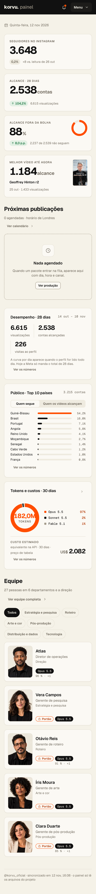
Os blocos, na ordem dos números
De onde vem cada dado
Vazio: “Nada agendado” na fila (aparece na foto).
Quem é quem por departamento, quem é portão, com que modelo trabalha e quanto consumiu em 30 dias.
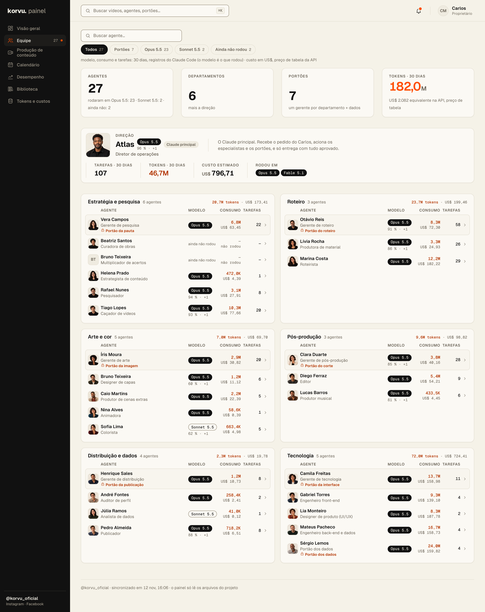
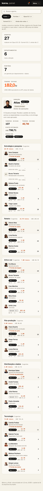
Os blocos, na ordem dos números
De onde vem cada dado
Vazio: “Equipe ainda não sincronizada”; sem consumo, o número mostra “—”. Sem foto, o cartão mostra as iniciais.
O que essa pessoa faz e, se for portão, o que passou por ela.
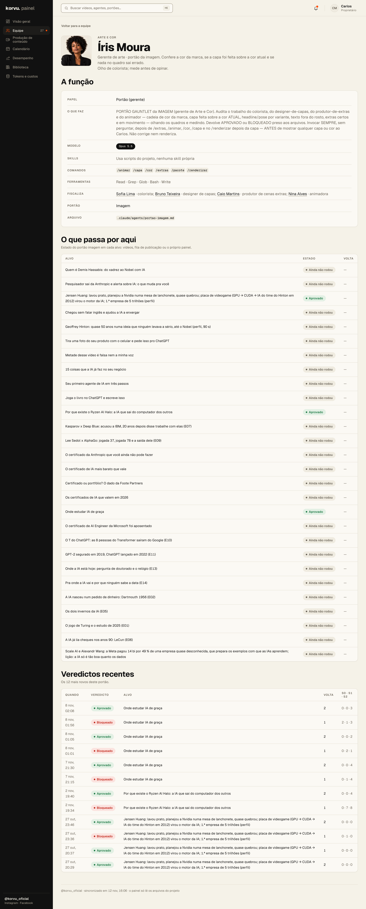
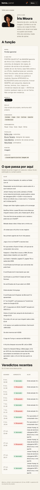
Os blocos, na ordem dos números
De onde vem cada dado
Vazio: “Nenhum alvo com este portão ainda”, “Nenhum veredicto ainda”; id inexistente = 404; erro de banco nunca vira 404.
Como pedir um agente novo já ligado ao portão do departamento.
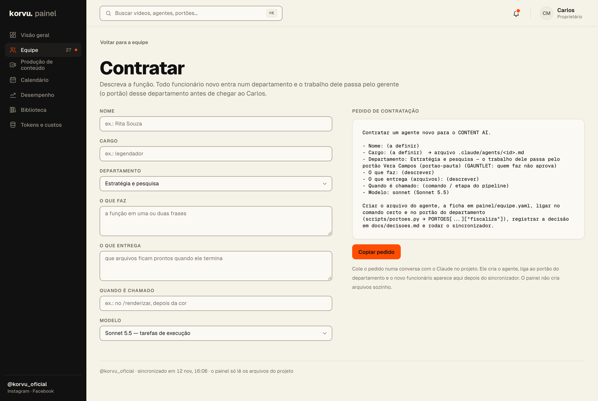
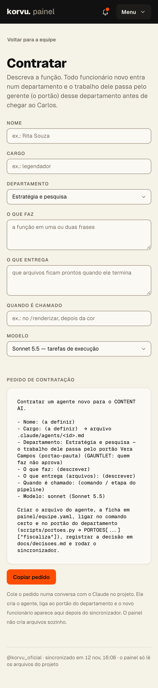
Os blocos, na ordem dos números
De onde vem cada dado
Em que fase está cada conteúdo e o que precisa de atenção.
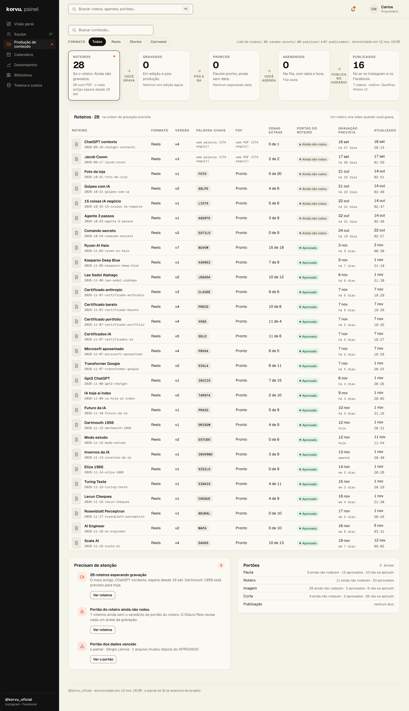
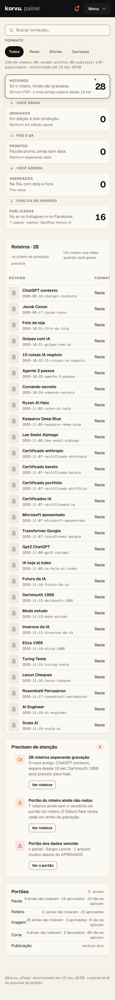
Os blocos, na ordem dos números
De onde vem cada dado
Fase: Roteiros = sem gravação; Gravados = gravado sem pronto; Prontos = QA PASS; Agendados = fila; Publicados = publicações. Vazio: “Nada em produção”, “Nada pede atenção agora”, “Nenhum portão no banco”.
O que sai em cada dia, onde, as vagas livres e se cada post da fila vai sair.
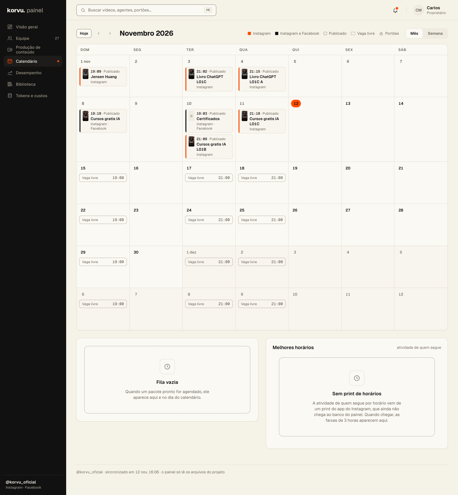
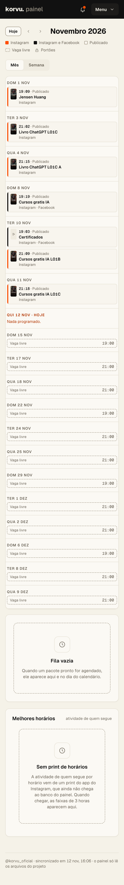
Os blocos, na ordem dos números
De onde vem cada dado
Hora do fuso de publicação. Vazio: “Nada programado neste mês”, “Fila vazia”, “Sem print de horários”. Sem vagas, o calendário continua.
O que cresce, quem os vídeos alcançam e qual conteúdo funciona.
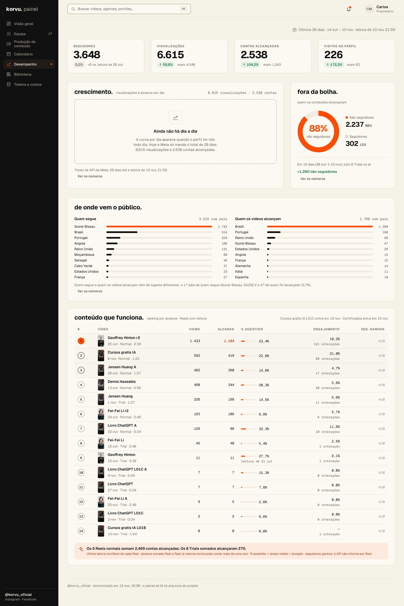
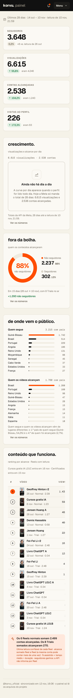
Os blocos, na ordem dos números
De onde vem cada dado
Leitura marcada como suspeita nunca entra em gráfico, ranking nem conta. Vazio: “Ainda não há dia a dia”.
Escolher o estilo do próximo vídeo e ver quanto espaço o estúdio ocupa e o que o faz rodar.
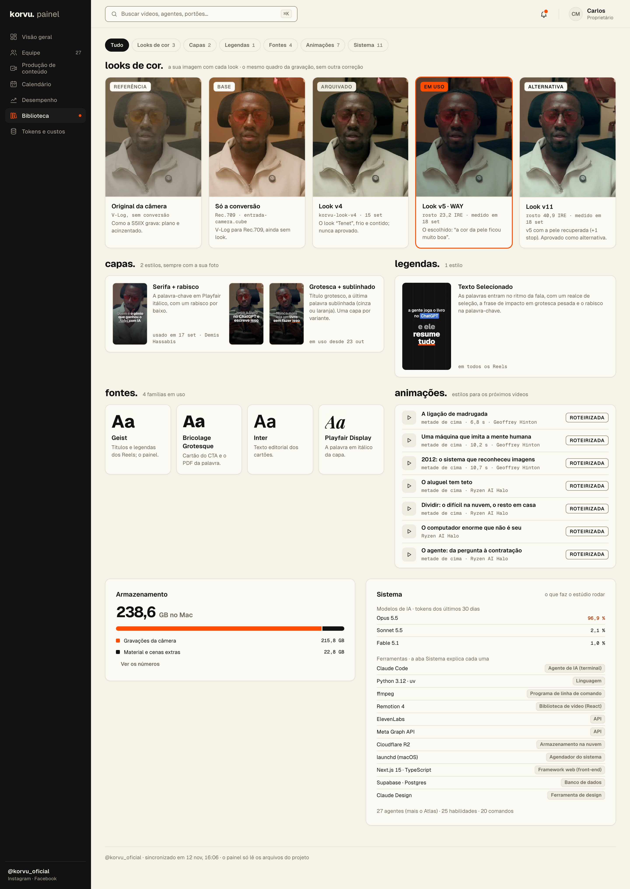
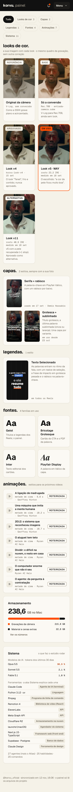
Os blocos, na ordem dos números
De onde vem cada dado
Quanto a operação de IA consome, onde, quem e quanto custa em dólar (preço de tabela da API).
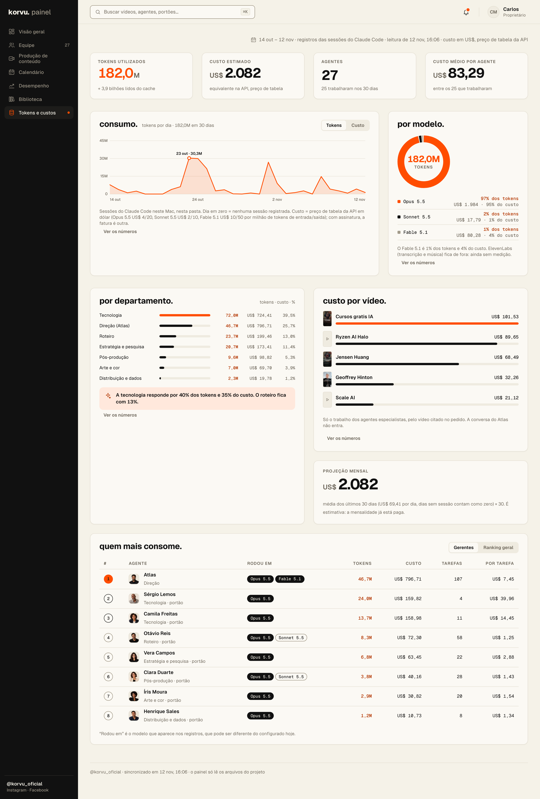
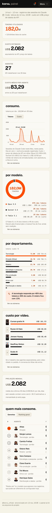
Os blocos, na ordem dos números
De onde vem cada dado
Custo = equivalente na API pelo preço de tabela, não a fatura da assinatura.
painel/design/
“korvu. painel”: desenhado pelo dono no Claude Design em 23/10/2026 e importado em PT-BR com os valores exatos. Um tema só, claro, chamado Marfim. As amostras abaixo usam o CSS do próprio painel e ficam no Marfim mesmo com esta página no escuro.
Geist e Geist Mono, arquivos variáveis locais, licença OFL 1.1 · números tabulares em tudo
de tokens.css · “não alterar sem decisão do autor”
48 arquivos em painel/web/src/components/ · amostras vivas com as classes k-*
Botão · k-btn
Chip de estado · k-chip
KPI · k-card k-kpi
Notificação · k-note
Portão de aprovação · k-gate
Evento do calendário · k-event
Busca e dica · k-search · k-tooltip
Opus 5.5o modelo que rodou nos 30 diasEstado vazio · k-empty
Quando um pacote entrar na fila, aparece aqui com dia, hora e canal.
Os 48 componentes
v0 estados · v1 toque, popovers e gaveta (03/11) · v2 os dados entram (04/11)
| Token | Valor | Uso |
|---|---|---|
| duracao-padrao | 150ms | troca de cor dos estados |
| duracao-linha | 120ms | hover da linha da tabela |
| atraso-dica | 300ms | até a dica aparecer |
| duracao-toque | 100ms | o controle afunda no toque |
| duracao-entrada | 160ms | popover e gaveta |
| duracao-pagina | 420ms | o cartão entra |
| duracao-dado | 760ms | barra cresce, arco gira, linha se revela |
| escalonar | 45ms | atraso entre irmãos |
Amostra: os dados entram
Toque nos botões das amostras: eles afundam (scale .97) no pointer-down, sem esperar o clique terminar.
Gráficos seguem a skill dataviz: um eixo, tabela gêmea em todo gráfico, hover e foco. Conferência de fidelidade em painel/design/verificacao/fidelidade.py e de contraste em contraste.py.
GAUNTLET · testes
Quem faz não aprova. Dois portões fiscalizam três áreas do painel, e a aprovação é presa aos arquivos: se um arquivo muda depois do APROVADO, o veredicto vence.
portao-interface fiscaliza designer-de-produto
Confere: fidelidade ao design aprovado, telas olhadas a 1440 e 375 px.
em 04/11
portao-interface fiscaliza engenheiro-frontend
Confere: código × design, dados honestos, gráficos, acessibilidade, chave nenhuma no navegador, tipos/lint/build.
em 04/11
portao-dados fiscaliza engenheiro-backend
Confere: migrações versionadas, RLS e permissões, sincronizador que só lê, contagens, segredos, isolamento, testes.
último APROVADO em 25/10; depois mudou o painel/equipe.yaml (o docs/gauntlet.md diz que esse arquivo fica fora das áreas)
Estado em 12/11, por uv run python scripts/portoes.py estado painel.
scripts Python em painel/tests/, não pytest
| Arquivo | O que cobre | Resultado em 12/11 |
|---|---|---|
| test_sincronizar.py 3.167 linhas · ≈ 327 checagens | Raiz temporária + banco descartável painel_teste_<pid>: cada mapeamento arquivo → linha, --seco, porta morta, contrato com os produtores, permissões “do zero”, reconciliação de tokens; confere que as migrações criam as 32 tabelas. | não rodado aplica as migrações num banco de teste; ficou fora do limite do levantamento |
| test_previas_looks.py 318 linhas | O gerador de prévias numa raiz temporária, com amostra e .cube sintéticos. | 44/44 PASS |
| test_biblioteca_yaml.py 149 linhas | O biblioteca.yaml real contra a maquete, o brand.ts e o sincronizador (só leitura).
| 19/22 3 FAIL |
uv run pytest painel/tests -q não rodaerror: Failed to spawn: pytest: o pytest não está nas dependências do pyproject.toml. Os testes rodam como uv run python painel/tests/<arquivo>.py.
bash painel/capturar.sh fotografa no Chrome sem janela a 1440 e 375 px, mede innerWidth/scrollWidth e falha se houver rolagem lateral: 0 casos nas 18 fotos desta documentação.
Do zero, num Mac
Pré-requisitos: macOS (launchd), Docker (aqui o Colima), Supabase CLI, Node ≥ 22 e npm, Python ≥ 3.12 com uv, Google Chrome (só para as capturas) e ffmpeg (só para as prévias dos looks). Os comandos rodam na raiz do projeto.
Python pelo pyproject.toml da raiz; Next.js pelo package-lock.json.
uv sync cd painel/web && npm ci && cd ../..
Sobe o Supabase local, confere as portas, roda uma passagem e abre o app em http://localhost:3456.
bash painel/iniciar.sh
bash painel/iniciar.sh, nunca um supabase start soltoO comando solto pode recriar a rede Docker aberta para a rede local. A tela de erro do app ainda sugere cd painel && supabase start (em web/src/lib/comandos.ts); o README.md e o próprio sincronizador dizem para usar o iniciar.sh.
Criar painel/web/.env.local com as duas variáveis abaixo. Nenhum script do painel cria esse arquivo; este passo foi deduzido do lib/db.ts e do README.md e não foi confirmado.
SUPABASE_URL=<API URL local> SUPABASE_SERVICE_ROLE_KEY=<service_role do supabase status>
bash scripts/launchd/instalar.sh uk.korvu.painel
launchctl kickstart -k gui/$(id -u)/uk.korvu.painel # forçar agorauv run python painel/tests/test_sincronizar.py uv run python painel/tests/test_previas_looks.py uv run python painel/tests/test_biblioteca_yaml.py
O config.toml aponta sql_paths = ["./seed.sql"], mas não existe painel/supabase/seed.sql. Auth e Storage estão ligados no config.toml (enable_signup = true), embora o painel não use login nem arquivos no Supabase. Que o primeiro supabase start aplica as 18 migrações sozinho é provável ([db.migrations] enabled = true), mas não foi testado no levantamento.
Trocar as chaves de demonstração do Supabase, criar um projeto Supabase na nuvem e rodar supabase db push, trocar o web/.env.local e pôr login antes de abrir. Hoje o painel foi feito para rodar só no Mac.
o que é preso ao estúdio e o que se reusa
videos/<slug>/…, 05-render-pronto, 06-publicar, 07-publicados, _controle/…, 00-marca/cor, remotion/src/brand.ts) e aos contratos de docs/contratos.md. Para outro projeto: reescrever as funções de leitura de sincronizar.py.scripts/portoes.py é importado do projeto (o GAUNTLET). Sem ele, o sincronizador não abre.painel/equipe.yaml, painel/biblioteca.yaml, painel/cambio.yaml, os retratos em web/public/equipe/ e os textos fixos (“o autor · Proprietário”, @korvu_oficial).PAINEL_REGISTROS troca); preços em PRECOS.PAINEL_PROJETO/CONTENT_AI_ROOT, banco por PAINEL_DB_URL, fuso de publicação no calendário, so-no-mac.sh pensado para o Colima, launchd (só macOS).painel/web/src/components/.capturar.sh, que fotografa qualquer página a 1440 e 375 px e acusa rolagem lateral.